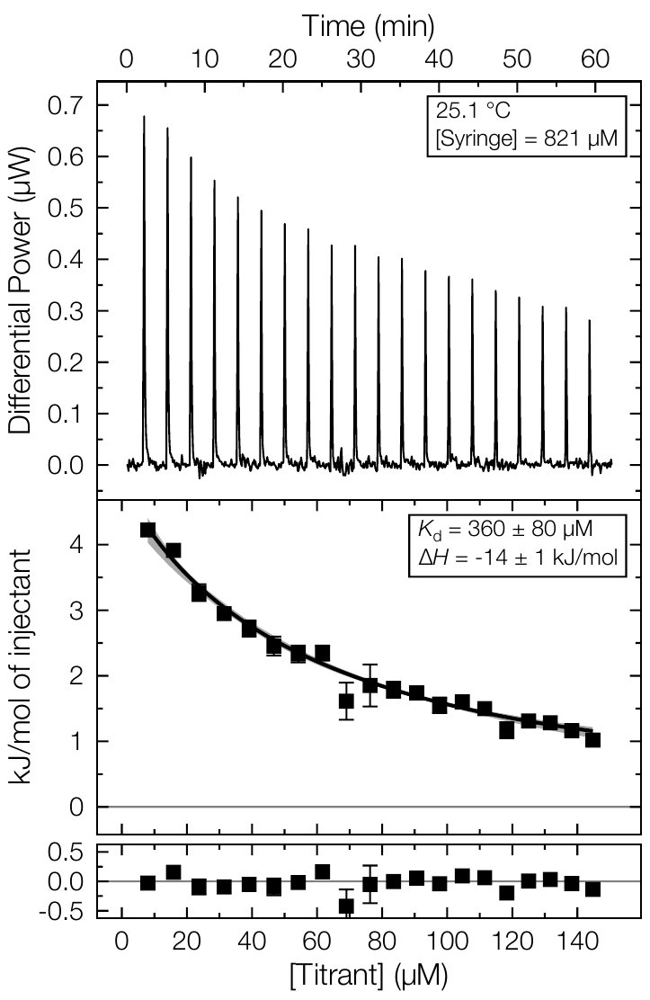

.itc
MicroCal raw data
Open raw ITC experiments for inspection, baseline fitting and integration.
Workflow resources
A short path through supported files, a first analysis, exports and places to get help.
Supported file types
.itc
Open raw ITC experiments for inspection, baseline fitting and integration.
.TA
Import TA Instruments / NanoAnalyze data exports.
.apj
Work with project files from PEAQ ITC workflows.
.dat
Bring in integrated heat data for fitting and further analysis.
A first analysis
Import one or more files, then check experimental setup and concentrations before processing.
Review the thermogram, set the baseline and make peak integration choices that match the experiment.
Choose a standard model and read the fit together with the data and residuals—not as an isolated number.
Save clear figures or processed results and retain the project context behind the result.

Results that communicate
Good ITC reporting preserves the relationship between the raw signal, integrated heats, fitted model and residuals. FT-ITC Analysis is designed around this visible chain.
Explore the analysis workspace →Research & citation
A dedicated paper describing the software is on its way. In the meantime, the studies below used FT-ITC Analysis in their thermodynamic workflows.
Forthcoming
Citation details and a link to the publication will be added here when the paper is available.
Research using FT-ITC Analysis
Help and feedback
The source repository is the best place to review documentation, inspect version history and report reproducible issues.
Include the input file type, the expected and observed outcome, and a minimal example dataset or export when possible.
Open an issue on GitHub ↗ Contact support ↗